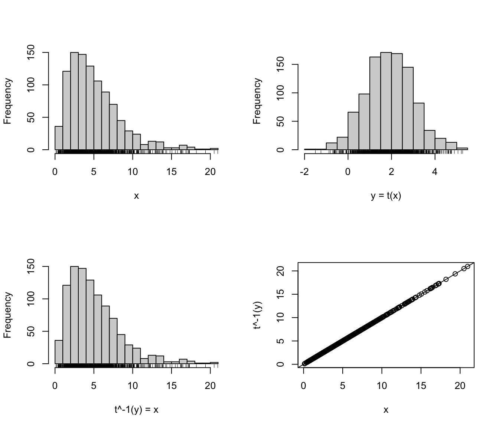

Range–power transformation
rangepowerTransform.RdFunctions to compute univariate range–power transformation and its back-transform.
Usage
rangepowerTransform(x, lbound = -Inf, ubound = +Inf, lambda = 1)
rangepowerBackTransform(y, lbound = -Inf, ubound = +Inf, lambda = 1)Arguments
- x
A numeric vector of data values.
- y
A numeric vector of transformed data values.
- lbound
A numerical value of variable lower bound.
- ubound
A numerical value of variable upper bound.
- lambda
A numerical value for the power transformation.
Details
The range-power transformation can be applied to variables with bounded support.
Lower bound case
Suppose \(x\) is a univariate random variable with lower bounded support \(\mathcal{S}_{\mathcal{X}} \equiv (l,\infty)\), where \(l > -\infty\). Consider a preliminary range transformation defined as \(x \mapsto (x - l)\), which maps \(\mathcal{S}_{\mathcal{X}} \to \mathbb{R}^{+}\). The range-power transformation is a continuous monotonic transformation defined as $$ t(x; \lambda) = \begin{cases} \dfrac{(x-l)^{\lambda} - 1}{\lambda} & \quad\text{if}\; \lambda \ne 0 \\[1ex] \log(x-l) & \quad\text{if}\; \lambda = 0 \end{cases} $$ with back-transformation function $$ t^{-1}(y; \lambda) = \begin{cases} (\lambda y + 1)^{1/\lambda} + l & \quad\text{if}\; \lambda \ne 0 \\[1ex] \exp(y)+l & \quad\text{if}\; \lambda = 0 \end{cases} $$
Lower and upper bound case
Suppose \(x\) is a univariate random variable with bounded support \(\mathcal{S}_{\mathcal{X}} \equiv (l,u)\), where \(-\infty < l < u < +\infty\). Consider a preliminary range transformation defined as \(x \mapsto (x - l)/(u - x)\), which maps \(\mathcal{S}_{\mathcal{X}} \to \mathbb{R}^{+}\). In this case, the range-power transformation is a continuous monotonic transformation defined as $$ t(x; \lambda) = \begin{cases} \dfrac{ \left( \dfrac{x-l}{u-x} \right)^{\lambda} - 1}{\lambda} & \quad\text{if}\; \lambda \ne 0 \\[2ex] \log \left( \dfrac{x-l}{u-x} \right) & \quad\text{if}\; \lambda = 0, \end{cases} $$ with back-transformation function $$ t^{-1}(y; \lambda) = \begin{cases} \dfrac{l + u (\lambda y + 1)^{1/\lambda}}{1+(\lambda y + 1)^{1/\lambda}} & \quad\text{if}\; \lambda \ne 0 \\[1ex] \dfrac{l + u \exp(y)}{1+\exp(y)} & \quad\text{if}\; \lambda = 0 \end{cases} $$
References
Scrucca L. (2019) A transformation-based approach to Gaussian mixture density estimation for bounded data. Biometrical Journal, 61:4, 873–888. https://doi.org/10.1002/bimj.201800174
Examples
# Lower bound case
x = rchisq(1000, 5)
y = rangepowerTransform(x, lbound = 0, lambda = 1/3)
par(mfrow=c(2,2))
hist(x, main = NULL, breaks = 21); rug(x)
hist(y, xlab = "y = t(x)", main = NULL, breaks = 21); rug(y)
xx = rangepowerBackTransform(y, lbound = 0, lambda = 1/3)
hist(xx, xlab = "t^-1(y) = x", main = NULL, breaks = 21); rug(xx)
plot(x, xx, ylab = "t^-1(y)"); abline(0,1)

# Lower and upper bound case
x = rbeta(1000, 2, 1)
y = rangepowerTransform(x, lbound = 0, ubound = 1, lambda = 0)
par(mfrow=c(2,2))
hist(x, main = NULL, breaks = 21); rug(x)
hist(y, xlab = "y = t(x)", main = NULL, breaks = 21); rug(y)
xx = rangepowerBackTransform(y, lbound = 0, ubound = 1, lambda = 0)
hist(xx, xlab = "t^-1(y) = x", main = NULL, breaks = 21); rug(xx)
plot(x, xx, ylab = "t^-1(y)"); abline(0,1)